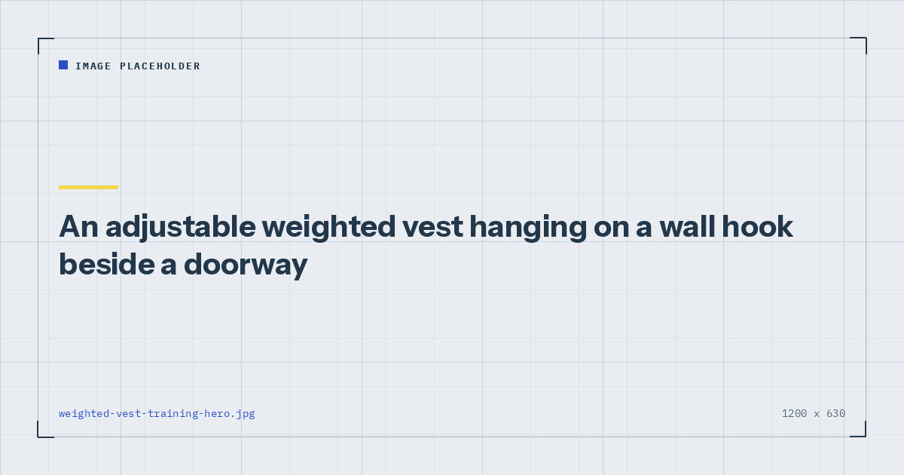

Minimal Gear
Weighted Vest Training at Home: Who It's For
A weighted vest solves one specific problem: bodyweight exercises you have outgrown. If you have not outgrown them, it solves nothing.

Weighted vests are marketed as a way to make any workout harder, which is true and not very useful. Making a workout harder is easy; making it harder in a way that produces adaptation is the actual question.
A vest answers one specific version of it well.
The problem it solves
Bodyweight training progresses by making movements harder — changing leverage, slowing tempo, reducing limbs. That works for a long time and eventually runs into a specific wall: the next progression becomes limited by skill or joint tolerance rather than by the muscle you meant to train.
An archer push-up is a good example. It is harder than a standard push-up, but a large part of the added difficulty is trunk anti-rotation and shoulder stability. If your chest is the thing you want to train, you are now training something else.
A vest resolves this cleanly: you keep the movement you have already mastered and add load to it. A weighted push-up trains the chest harder without introducing a new skill. Same for pull-ups, dips, split squats and step-ups.
That is the whole case, and it is a good one — but it only applies once you have genuinely reached that wall. The evidence on where bodyweight training tops out is in can you build muscle with bodyweight only.
Who it is for
Worth buying if: you can do fifteen or more clean floor push-ups, five or more strict pull-ups, and three sets of twelve Bulgarian split squats. At that point standard bodyweight variations are genuinely running out and added load is the sensible next step.
Not worth buying if: you are still working through the incline push-up ladder, still working toward a first pull-up, or training fewer than twice a week. In those cases the progression available for free is far from exhausted — the ladders are in bodyweight exercise progressions.
The common error is buying one early, in the belief that added load accelerates progress. It does not; it converts an exercise you can do many repetitions of into one you can do few repetitions of, which is only useful if the many-repetition version has stopped working.
Why a rucksack does most of it
A backpack loaded with books provides load attached to your torso, hands free, adjustable in increments of one book. That is a vest, made of things you own.
What a rucksack does worse: the load sits behind you rather than being distributed, which shifts your centre of mass backward. For squats and split squats that is fine and arguably helpful. For push-ups it is fine. For pull-ups it is awkward, though wearing it on your front solves that.
What a vest does better: even distribution, closer to the body, no shifting, and it does not interfere with lying on your back. It is also more comfortable at higher loads — above about fifteen kilograms a rucksack becomes genuinely unpleasant.
The sensible sequence is to use a rucksack first, establish that you actually use added load regularly, and buy a vest when the rucksack's comfort limits start restricting you. The full improvised approach is in DIY home gym equipment.
Choosing a vest
Adjustability is the feature worth paying for. A fixed-weight vest is a single progression step; an adjustable one with removable weights is a whole ladder. Look for increments of about half a kilogram to one kilogram.
Total capacity. Ten kilograms suits most people starting out. Twenty is plenty for almost anyone training at home. Vests going to forty kilograms exist and are heavier than most home trainees will ever need.
Fit matters more than capacity. A vest that shifts during push-ups is unpleasant and distracting. Look for adjustment at the waist as well as the shoulders.
Bulk. A thick vest interferes with lying on your back and can obstruct the bottom of a push-up. Slimmer designs distribute the weight in more, smaller packets.
Using it well
Start with about five per cent of your bodyweight and add gradually. For an 80-kilogram person that is four kilograms, which will feel trivially light and is the correct starting point.
Use it on movements you have mastered. Push-ups, pull-ups, dips, split squats, step-ups, planks. Not on movements you are still learning, and not on anything requiring balance you have not established.
Expect your repetitions to drop sharply. Ten kilograms on a bodyweight exercise is a large relative increase, and dropping from fifteen push-ups to eight is normal.
Keep the rep range sensible. Six to fifteen for most exercises. If a vest takes you below about five repetitions, it is too heavy for a home setting where you have no spotter and no bail-out.
Weekly volume drives adaptation up to a point,1 and adding load does not change that — it changes how much volume you can accumulate per set rather than how much you need.
A vest does not accelerate progress. It extends the runway once the free progressions have run out.
Weighted walking
Worth a note because it has become popular and the claims outrun the evidence somewhat.
Walking with a loaded vest or pack increases the energy cost of the walk, which is real and measurable. It also increases loading through the spine, hips and knees, which is the part usually left out.
Reasonable position: for a healthy person, moderate loads over moderate distances are fine and a legitimate way to make a walk more demanding. Adult activity guidance is met by ordinary brisk walking without any load,2 so the vest is an intensification rather than a requirement.
If you have any history of back, hip or knee problems, this is one to discuss with a physiotherapist rather than adopt from a fitness article.
Cautions
Added load increases stress on joints and connective tissue, which adapts more slowly than muscle. Increase in small increments and expect to spend several weeks at each. Do not use a vest for jumping or plyometric work at home — the landing forces are substantially higher and the surfaces are not designed for it. And if you have a diagnosed back, hip or knee condition, or are pregnant, speak to a clinician before training with added load.
Where to go next
For the free version, see DIY home gym equipment. For where a vest sits in a buying order, see the minimalist home gym guide.
Frequently asked questions
Is a weighted vest worth it for home workouts?
Only once standard bodyweight variations are genuinely running out — roughly fifteen clean push-ups, five strict pull-ups and three sets of twelve Bulgarian split squats. Before that, the free progressions are far from exhausted.
How much weight should I start with in a vest?
About five per cent of your bodyweight, which for an 80-kilogram person is four kilograms. It will feel trivially light, and that is the correct starting point. Connective tissue adapts more slowly than muscle.
Is a rucksack as good as a weighted vest?
For most purposes, yes, and it costs nothing. The load sits behind you rather than being distributed, which is fine for squats and push-ups and awkward for pull-ups unless you wear it on your front. Above about fifteen kilograms a rucksack becomes genuinely uncomfortable.
What exercises can you do with a weighted vest?
Push-ups, pull-ups, dips, split squats, step-ups and planks — movements you have already mastered. Not movements you are still learning, and not anything requiring balance you have not established.
Is walking with a weighted vest good for you?
It increases the energy cost of the walk, which is real. It also increases loading through the spine, hips and knees, which is usually left out of the claims. Fine for healthy people at moderate loads; worth discussing with a physiotherapist if you have back, hip or knee problems.
Can you jump in a weighted vest?
Not at home. Landing forces are substantially higher with added load, and domestic floors are not designed for it. Keep vest training to controlled strength movements.
Sources and further reading
- Schoenfeld BJ, Ogborn D, Krieger JW. “Dose-response relationship between weekly resistance training volume and increases in muscle mass: A systematic review and meta-analysis.” Journal of Sports Sciences, 2017;35(11):1073–1082. PubMed.
- World Health Organization. WHO Guidelines on Physical Activity and Sedentary Behaviour. 2020.
- NHS. Physical activity guidelines for adults aged 19 to 64.
- Schoenfeld BJ, Grgic J, Ogborn D, Krieger JW. “Strength and Hypertrophy Adaptations Between Low- vs. High-Load Resistance Training: A Systematic Review and Meta-analysis.” Journal of Strength and Conditioning Research, 2017;31(12):3508–3523. PubMed.
Comments
Comments are not enabled yet. Add a hosted comment embed (Disqus, Commento, Giscus) inside this container when you are ready.